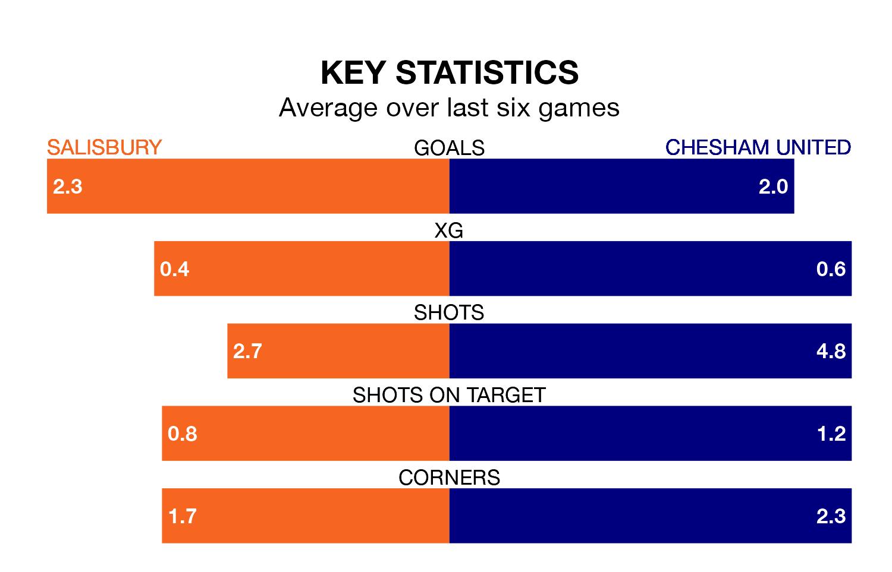

The Southern League Premier South's top two sides face each other at the Raymond McEnhill Stadium in Saturday's kick-off, when second-placed Salisbury host Chesham United.
Salisbury have picked up 18 wins and eight draws from 32 games so far this season, and sit 15 points below the visitors going into the 3pm match.
Chesham, meanwhile, have won 24 and drawn five of 33, picking up 77 points.
With 68 goals in 33 games so far this season, Chesham are the league's highest scorers with 2.1 goals per game. And they are conceding fewer than average, letting in 33 goals at a rate of 1.0 per game.
Salisbury are also above average scorers, with 1.8 goals per game, compared to a league average of 1.7. They have conceded 1.1 goals per game.
The home team are in reasonable form in the Southern League Premier South, with three wins and two draws from their last six games.
With five wins and a draw over that period, United's form is better – they have taken 16 points from 18, compared to Salisbury's 11.
In the last 10 years, Salisbury and Chesham have played each other on six occasions. Salisbury won one of them, Chesham four, and they drew once.
On average, Salisbury scored 1.3 goals and Chesham 2.2 in those matches.
Their last meeting was on April 15, when Chesham won 3-1 at home.
Salisbury's last match was on February 24, a 2-2 draw against Didcot Town.
Chesham beat Hendon 1-0 last time out, on March 2.
Updated: 09:34 (UTC), 08/03/24